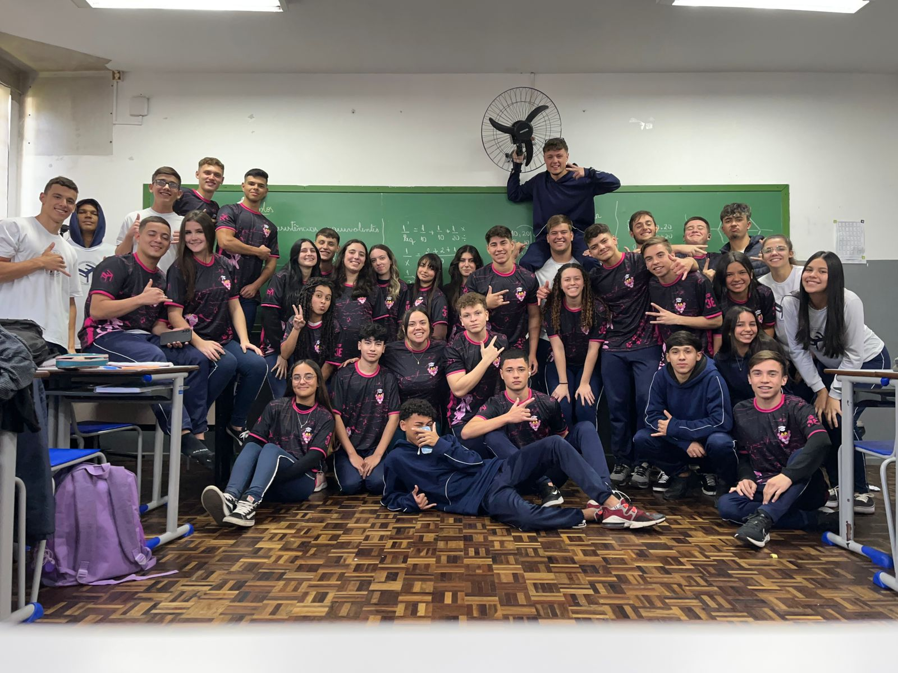
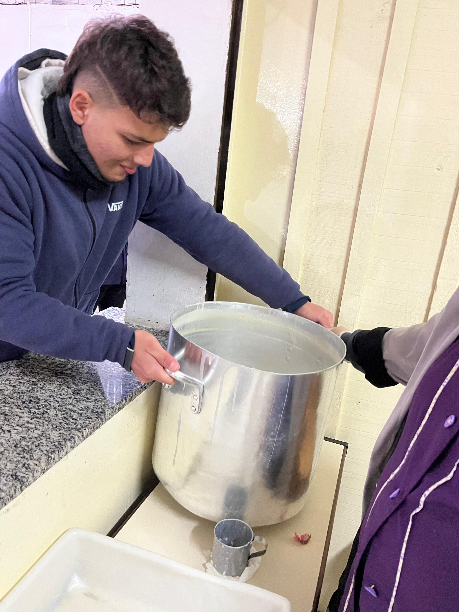
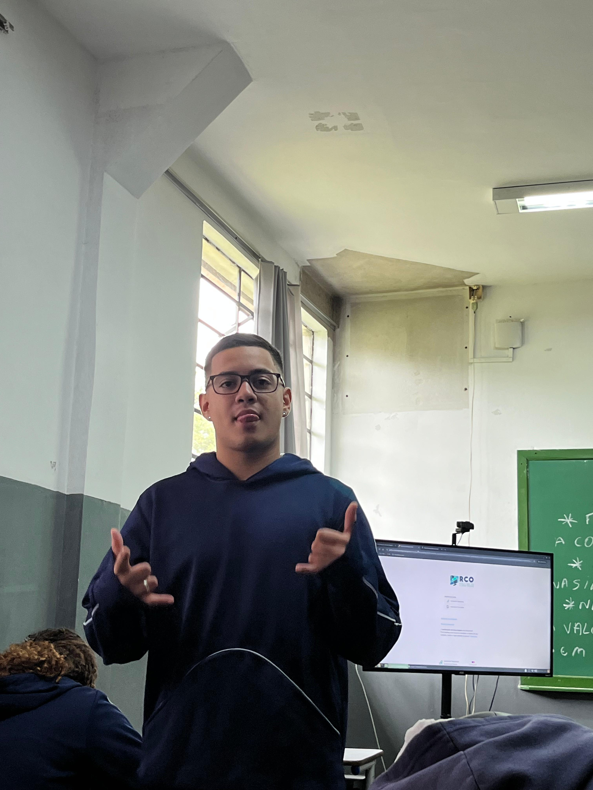
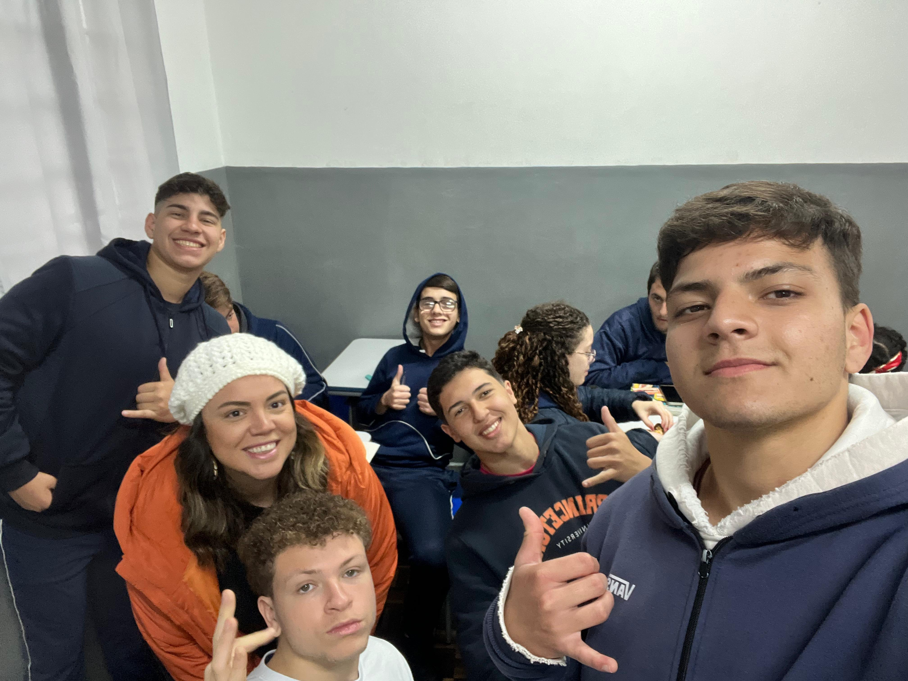
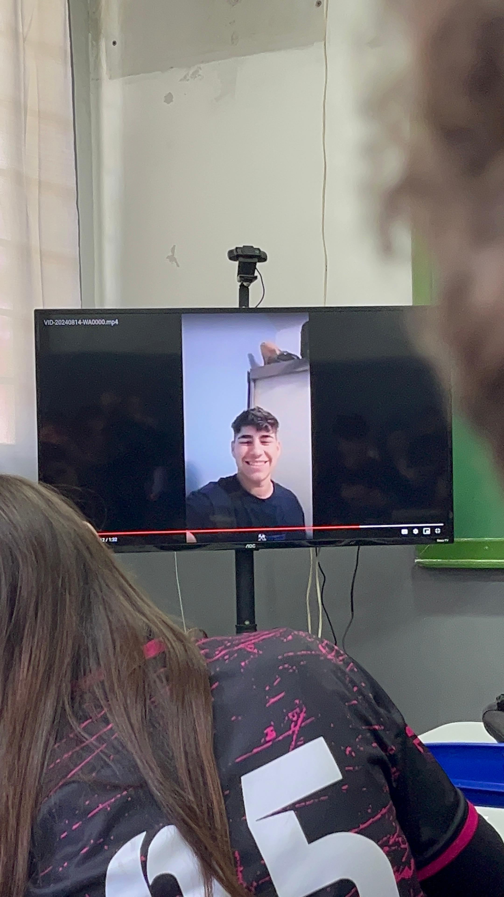

Apenas Caos
Nesse dia a gente foi tirar uma foto da turma com a prof do meu Último ano na escola.

Comedor de Arroz Doce
Ele parece que passa fome quando ta indo comer arroz doce

Nay Nerd
Autoexplicativa
O Desafio da Porta que Canta
"Sempre que você a empurra, ela canta em protesto. Quando você a puxa, ela resmunga com mais força. E, quando você finalmente a fecha, ela murmura baixinho. Quem é ela?"
O Enigma do Copo Esquecido
"Você o enche de esperança e o deixa sobre a mesa, prometendo que irá bebê-lo. Mas, quando retorna, ele já desapareceu, deixando apenas um anel de saudade. O que é?"
O Segredo do Pão de Forma Mágico
"Ele aparece fresco e fofo no seu café da manhã, mas desaparece misteriosamente no jantar, sem deixar vestígios. Onde ele foi?"

Professora Mariana
Prof Linda

Giovanni Sorrindo
Ô menino sorridente